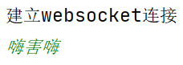
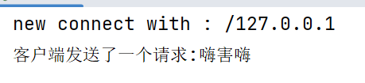
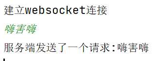

java的Websocket开发
WebSocket简介
WebSocket是一种在单个TCP连接上进行全双工通信的协议。WebSocket通信协议于2011年被IETF定为标准RFC 6455，并由RFC7936补充规范。WebSocket API也被W3C定为标准。
WebSocket使得客户端和服务器之间的数据交换变得更加简单，允许服务端主动向客户端推送数据。在WebSocket API中，浏览器和服务器只需要完成一次握手，两者之间就直接可以创建持久性的连接，并进行双向数据传输。主要用在对消息实时性比较高的场景.用来替代轮询方案
websocket使用场景具体如下：
- 实时在线聊天
- 浏览器之间的协同编辑工作
- 多人在线游戏
依赖引入
<!-- https://mvnrepository.com/artifact/org.java-websocket/Java-WebSocket -->
<dependency>
<groupId>org.java-websocket</groupId>
<artifactId>Java-WebSocket</artifactId>
<version>1.5.3</version>
</dependency>代码分析
服务器实现
继承WebSocketServer类监听各类事件，主要有以下五个事件：
- onStart： 服务器启动事件
- onOpen： 连接打开事件
- onMessage： 接收消息事件
- onClose： 连接关闭事件
- onError： 连接出错事件
/**
* websocket服务端
*/
public class server extends WebSocketServer {
public server(int port) {
super(new InetSocketAddress(port));
}
@Override
public void onOpen(WebSocket webSocket, ClientHandshake clientHandshake) {
System.out.println("有人进来了");
}
@Override
public void onClose(WebSocket webSocket, int i, String s, boolean b) {
}
@Override
public void onMessage(WebSocket webSocket, String s) {
System.out.println("收到来自客户端的消息: "+s);
}
@Override
public void onError(WebSocket webSocket, Exception e) {
}
@Override
public void onStart() {
}
public static void main(String[] args) throws IOException, InterruptedException {
server server = new server(8111); // 设置端口号
server.start(); // 开启服务器
System.out.println("服务器端启动，端口号为: "+server.getPort());
// 等待输入
BufferedReader bufferedReader = new BufferedReader(new InputStreamReader(System.in));
while(true){
String in = bufferedReader.readLine(); // 不断读取输入的行数据
server.broadcast(in); // 服务端接受输入的行数据
/* 如果输入exit命令，则关闭服务器 */
if(in.equals("exit")){
server.stop(1000); // 停止server
break;
}
}
}
}客户端实现
和服务端一样，继承WebSocketClient类监听各类事件，事件的作用参考
import org.java_websocket.WebSocket;
import org.java_websocket.client.WebSocketClient;
import org.java_websocket.enums.ReadyState;
import org.java_websocket.handshake.ServerHandshake;
import java.io.BufferedReader;
import java.io.IOException;
import java.io.InputStreamReader;
import java.net.URI;
import java.net.URISyntaxException;
import java.nio.charset.StandardCharsets;
import java.util.Iterator;
/**
* 客户端
*/
public class client extends WebSocketClient {
public client(String url) throws URISyntaxException {
super(new URI(url));
}
@Override
public void onOpen(ServerHandshake serverHandshake) {
}
@Override
public void onMessage(String s) {
System.out.println("服务端发送了一个请求:"+s);
}
@Override
public void onClose(int i, String s, boolean b) {
System.out.println("关闭客户端");
}
@Override
public void onError(Exception e) {
}
public static void main(String[] args) throws URISyntaxException, InterruptedException, IOException {
client client = new client("ws://localhost:8111//"); // 传入url
System.out.println("建立websocket连接");
client.connectBlocking(); // 连接服务器，直到连接成功后继续
// 等待输入
BufferedReader bufferedReader = new BufferedReader(new InputStreamReader(System.in));
while(true) {
String in = bufferedReader.readLine(); // 不断读取输入的行数据
/* 如果输入exit命令，则关闭服务器 */
if (in.equals("exit")) {
client.close(); // 停止client
break;
}else{
client.send(in);
}
}
}
}运行过程
先启动服务端后再启动client，在client类中的终端输入字符，可看到在server端有返回字符


并且在server中的终端输入字符，也能看到client端有返回字符。

本博客所有文章除特别声明外，均采用 CC BY-SA 4.0 协议 ，转载请注明出处！